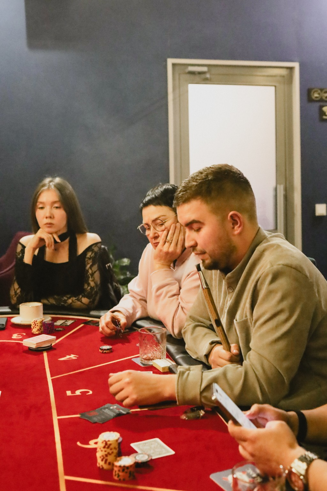
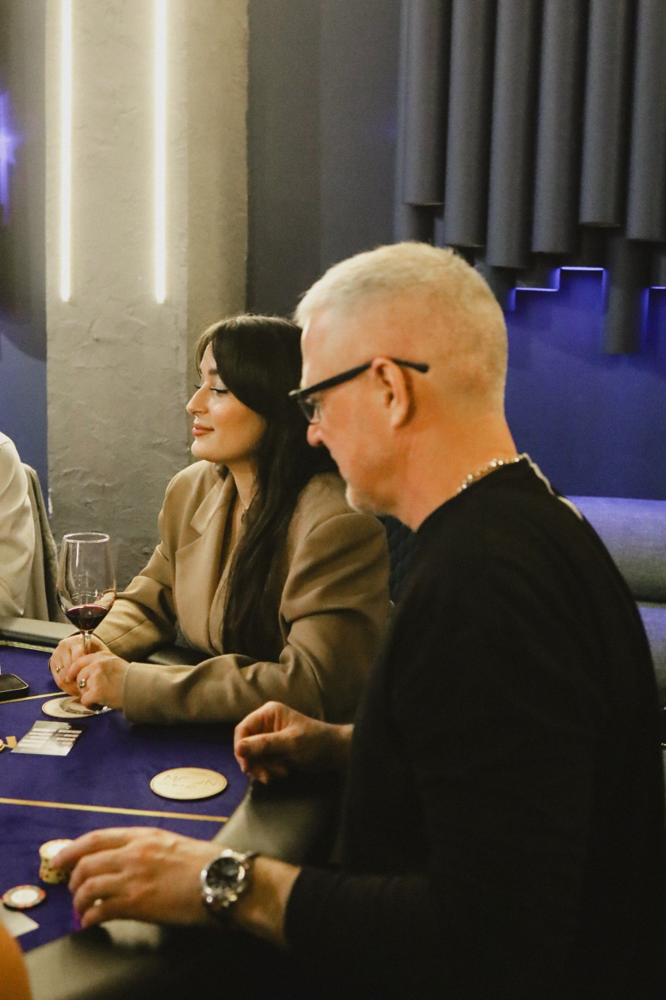
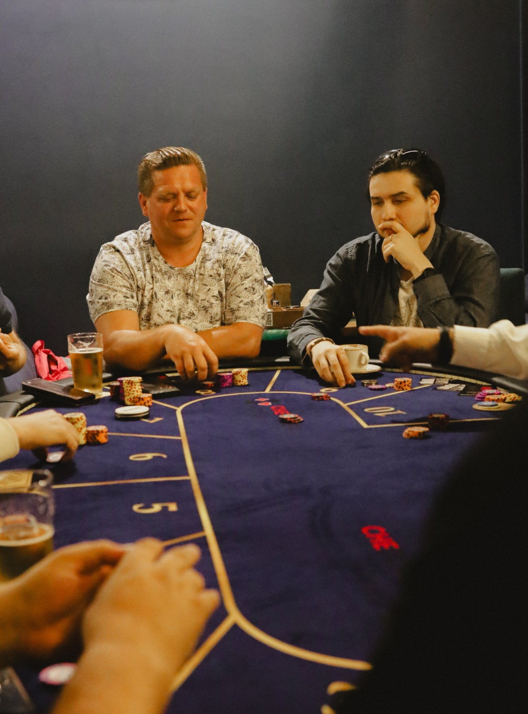
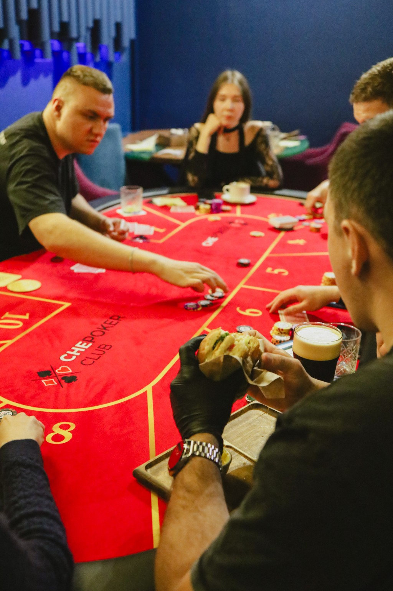
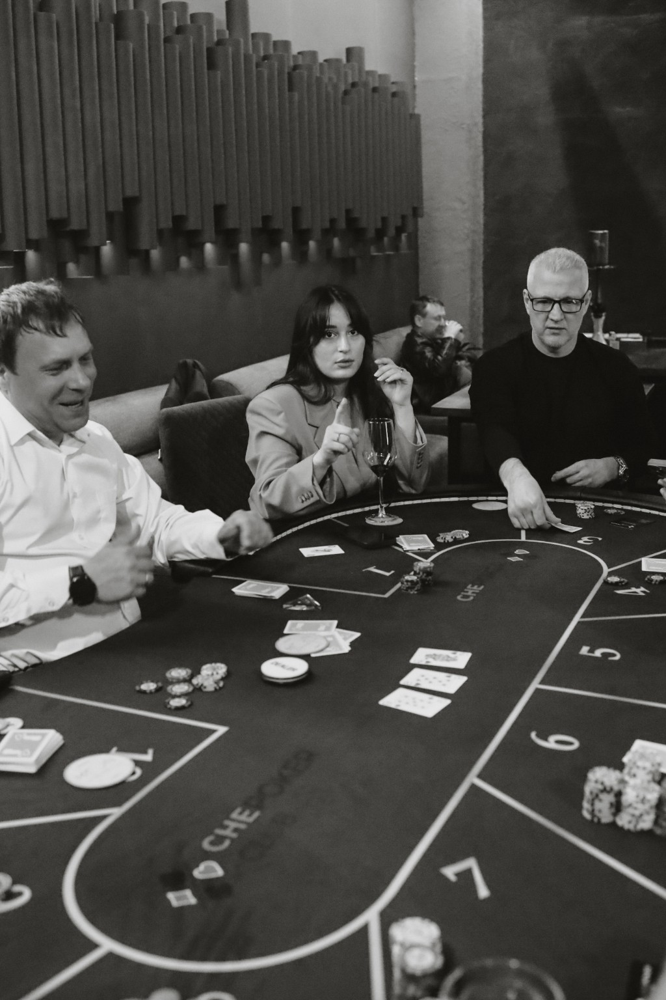
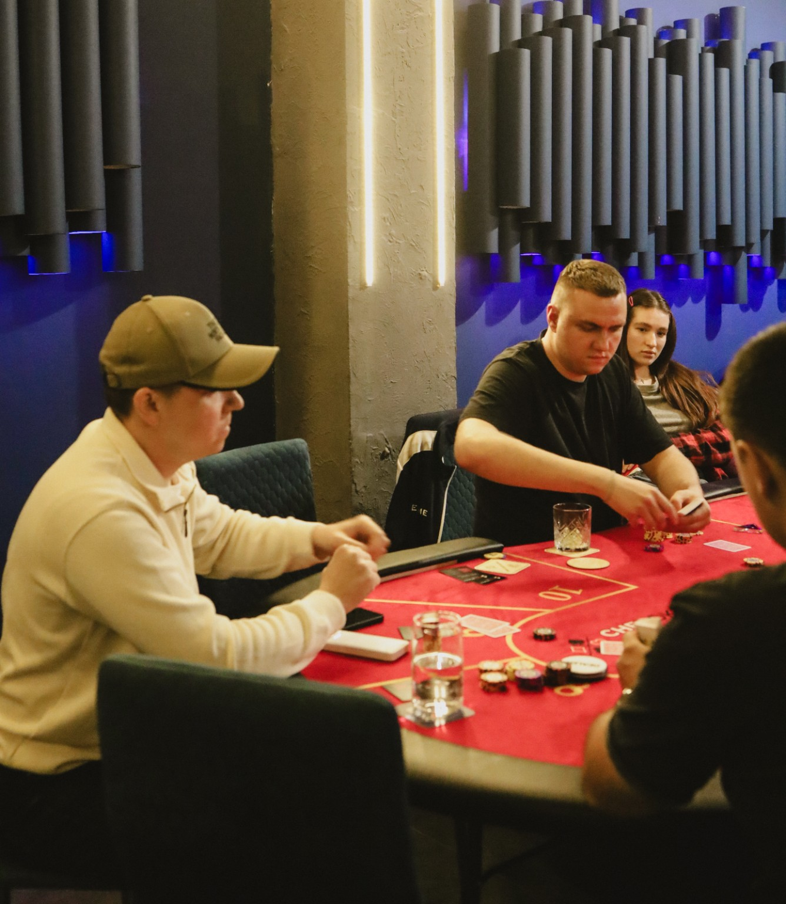
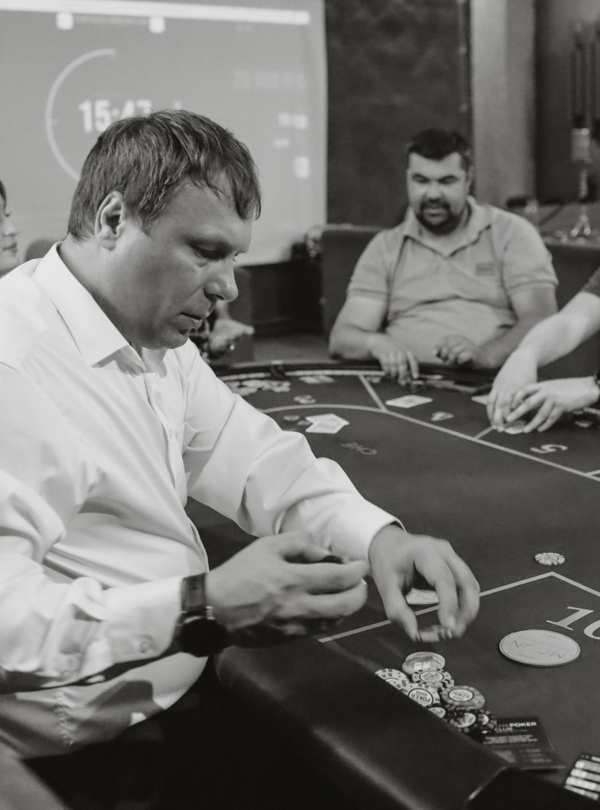
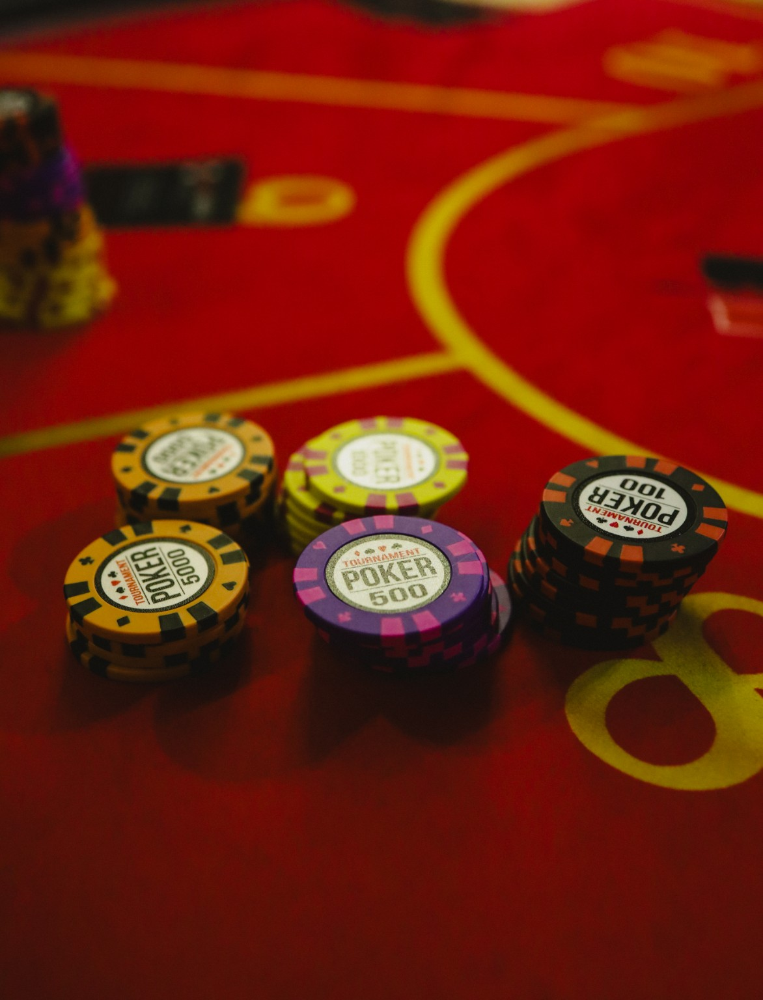
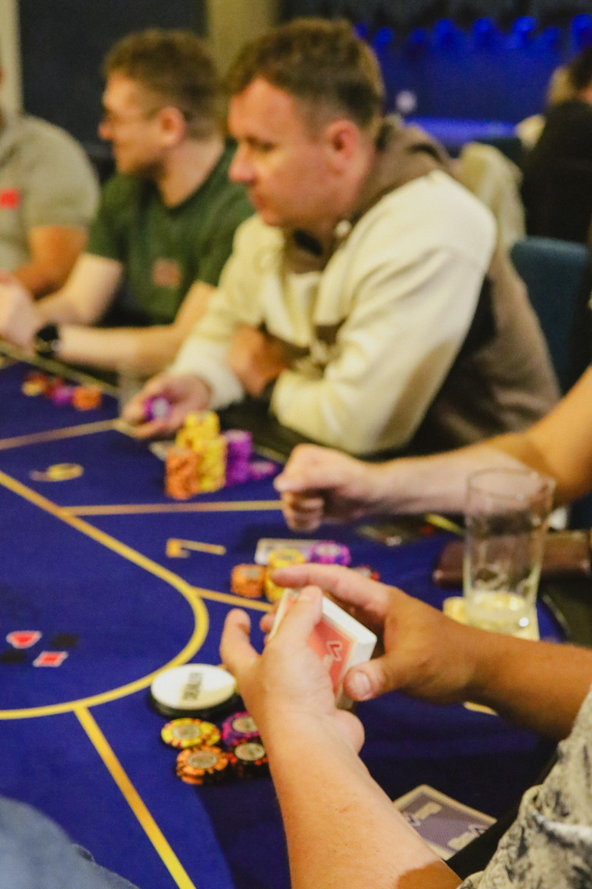

01
ТУРНИРНЫЕ ИГРЫ
Собираемся за одним столом и играем разные форматы спортивного покера. У каждой встречи свой темп, но атмосфера остаётся нашей.

CHEPOKER CLUB · ЧЕБОКСАРЫ
Место, где встречаются стратегия, эмоции и хорошие люди.
CHEPOKER CLUB — клуб спортивного покера для людей, которым нравится интеллектуальная игра, живое общение и хорошая компания.
Мы играем не на деньги. За столом важны стратегия, выдержка, наблюдательность и умение принимать решения. Никаких денежных ставок и денежных призов.
Не умеете играть? Научим. Уже играете? Найдёте соперников, с которыми действительно интересно встретиться за одним столом.
Хочу попробовать →

Собираемся за одним столом и играем разные форматы спортивного покера. У каждой встречи свой темп, но атмосфера остаётся нашей.

Первый раз? Объясним правила, покажем, как проходит турнир, и поможем спокойно включиться в игру.

Покер быстро знакомит людей. Раздачи обсуждают, над решениями спорят, а после игры часто остаются просто пообщаться.

НЕ ТОЛЬКО КАРТЫ И ФИШКИ
Мы не пытаемся сделать покер «сложным клубом для своих». Наоборот: хочется, чтобы за столом было интересно и опытному игроку, и человеку, который пришёл впервые.
Хорошие карты помогают. Но решения, дисциплина и понимание ситуации значат гораздо больше.
За одним столом оказываются люди разных профессий и возрастов — и покер очень быстро убирает формальности.
Не нужно заранее знать позиции, комбинации и турнирные нюансы. Основы объясним и поможем освоиться.
Блефы, сложные решения, неожиданные раздачи и тот самый момент, когда за столом становится очень тихо.

CHEPOKER CLUB / ЧЕБОКСАРЫ
Классический турнир, стратегия, интересные раздачи и знакомая атмосфера CHEPOKER CLUB.
♠Формат, в котором турнир и вечер в хорошей компании становятся одной историей.
♥Экспериментальный формат: после выигранной раздачи Button переходит победителю банка.
♦Мы продолжаем пробовать новые механики и делать каждую встречу чуть иначе.
♣Собрали вопросы, которые чаще всего возникают перед первой игрой.
Без стоков и постановки — обычные моменты с наших игр.




CHEPOKER CLUB
Приходи один, с друзьями или коллегами. Если не умеешь играть — научим.